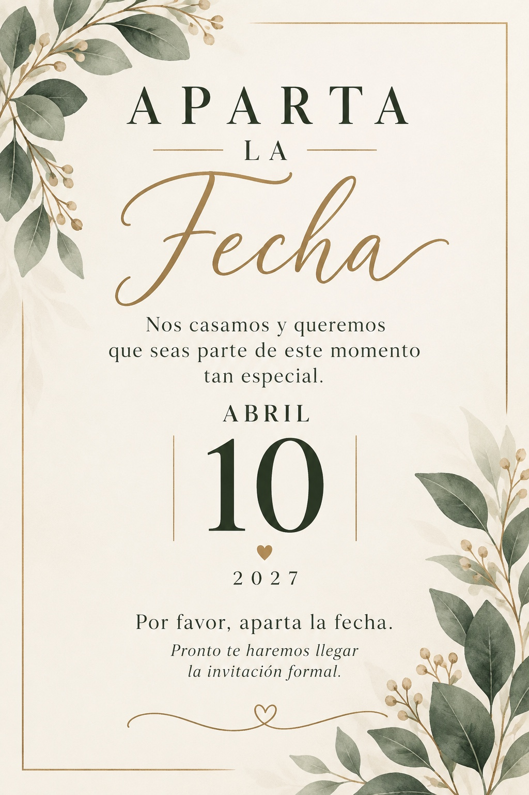

UN DÍA MUY ESPECIAL
Toca el sello para abrir tu sobre ✉
YOLANDA ♡ JESÚS
10 · 04 · 2027
♡
10 · 04 · 2027
♡
♡

YOLANDA ♥ JESÚS
¡Nos casamos! · Sábado 10 de abril de 2027
CUENTA REGRESIVA
—
DÍAS
—
HORAS
—
MINUTOS
—
SEGUNDOS
Pronto te haremos llegar la invitación formal.